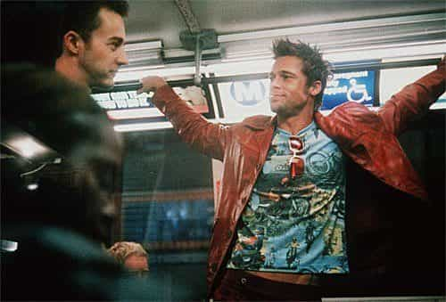

< < < Back
10 Reasons Why You Must Study Body Language – Return Of Kings
In this article, I will use a broad definition of body language that includes, among other things, clothes and the messages they send, posture, walk, facial expression, eye contact and movement, voice tone, eloquence, handshake, facial hair, hair, body modifications, etc.
My personal study of body language started about five years ago with the excellent The Definitive Book Of Body Language by Allan and Barbara Pease, two Australian body language specialists. It was an eye opener and I have studied the subject since then. It has radically changed my life and brought me more success in many different fields.
Man is by nature a social animal
Aristotle
We are social animals but we are nonetheless animals. Man always analyses the impact of someone on himself and on society. But because he is an animal like any other, he reacts mainly through visual stimuli. It can not be repressed.
It is a great asset for one to be able to guess what kind of human their interlocutor is before any word has been pronounced. It is a talent that must be cultivated and has intangible value. We give clues and signals by our appearance. One is what he is through his actions and looks.
More than ever, we are our faces. We are what we look like. Here is how this science will help you:
1. You can be more successful with women

Let’s start with the big guns. You will have the ability to scan the women around you before they open their mouth. Is she looking for a one night stand? Can you sleep with her fast? How does she react to your hand brushing hers?
You will also learn more about how to display a confident and dominant body posture that will create interest and attraction. Doesn’t matter what you say, as long as the attitude is dominant and confident. I once slept with a girl after introducing myself as a squirrel fight promoter and weasel merchant.
You will feel that you can score if you escalate even if there is no verbal confirmation. You will get laid more and have more successful relationships with women. Mental health, sexual availability, sluttiness, level of attraction… you will know hundreds of things by observing and analyzing what you see before and during the interaction.
You will skim faster fruitless prospects, charge on when the lights are green, read the slut signs and hopefully avoid the kind of mentally ill women that would try to kill you in your sleep.
2. You can avoid potential danger
You can read the aggressiveness in someone’s pace or if they get in position to strike you. By displaying a strong posture, athletic looks, and a confident gaze, the potential attacker or conman would think twice about choosing you as a target and will probably prefer an easier prey.
You could notice the eyes of the teenager at the end of the train carriage that has been looking twice at your bag on the floor, avoiding your glance when you catch him doing it. Or you could see a quarrel broiling from far by the body postures of the ones involved and steer clear of it. You will be sharper at seeing what people try to conceal and their hidden intentions.
3. You can know the men you deal with

Political opinions, occupation, taste in entertainment, self-discipline, sexual orientation, level of fitness, religious beliefs, past injuries, self-confidence, success with the opposite sex, relationships with others, social background, hierarchy in the group. People send us messages to read 24/7 without saying a word.
Men are no exception. Analyze a man’s physical shape, his outfit, his haircut, his gaze. Observe the way he sits, walks, smiles, talks and looks at someone. Then confirm your first impression by engaging verbally with him and confirm your theory. Even if your analysis is accurate, you can not always be right.
Can he be trusted? Is he lying to me about his accomplishments or is he genuine? Should I sign up for a gym if the instructor is fat and has poor posture? I do not think so. You will know who you choose to associate with and who are the trouble makers and the empty suits.
4. You can improve your business skills
You will know faster who is embellishing the figures, boasting, or shows true drive in the way their body behaves. You can know how to follow your progress during an interview or a sales pitch, adjust your attitude to what is visibly working and backtrack if necessary. You will appear calm and in control even if the situation is stressful. Smirk, use a calm and low voice tone, relax your shoulders, display confidence. This is what makes the difference.
Learning these principles will help you become a better negotiator as you will get better prices and protect your money from crooks when you feel the scam. You could use it to haggle like a champion, get more contacts, and gauge people’s reactions better.
5. You can become a leader
You can convince a group with your relaxed attitude and your eloquence. They will see you as a natural ruler. “Join me and my cause!”, cries the potential leader from the stage.
With the same arguments, who will seduce the crowd? Someone crouched on himself, sweating and looking at the floor or someone standing with a composed, strong posture and a burning gaze, directly looking in the eyes of the mob?
6. You can be healthier
You will improve your well-being and your general happiness by seeing the positive changes it brings you. Standing straight instead of having a slouched posture will protect your spine in addition to making you look taller.
You will breathe easier by relaxing your shoulders and you will protect your joints and bones by walking properly. Muscle tension will disappear, your moves will be more fluid and you will simply feel better.
It will also improve the way you can physically help people. You will be able to see when they are in pain, if they limp, or if a child is not sitting properly. You could detect wounds and ailments and be able to assist your common man quicker.
7. You can analyze the media better
You will process information in a better manner and interpret it with more scrutiny. Lying leaders, new faces that are or not trustworthy, reporters that say what they have been told to, even if they do not believe a word of it.
You will be able to see who is born to be a leader and who will be forever the victim that was bullied at school and will take his revenge on the big meanies once he is in power. If he has his hands in his pockets, his arms crossed, blinks too much, adopts a defensive position in his seat or hugs the walls, it is not a good start. Wait till he starts speaking.
Can you hear the little farts of fear yet?
Textbook dominant body language
Your sharp eye will make you a better citizen and will help you take the right decision when the moment comes.
8. You can kill it at sports

It will make you a better sportsman and will improve your results in many leisure activities. You may be able to intercept the shot of the striker because he betrayed his intentions by his eye movement and the unconscious orientation of his body. You could also know where the ball carrier wants to run and tackle him more efficiently.
Martial arts champions would not be were they are if they could not read the moves of their opponent. You too could know when you have sown doubt in your opponent’s brain, which shot hit him hard and shook his confidence. If you perceive weakness in his eyes, it will give you an undeniable psychological advantage.
Games like poker rely heavily on these ideas. Beginners about to take a huge risk twitch, breathe faster, and have trouble staying still. Pros know how to control their nerves and keep the famous “poker face,” which is the ability to keep one’s body language neutral.
9. You can learn a new, useful hobby

It is, in many aspects, a language that you learn to read and speak. But like every language, you can improve or you can also become rusty. It demands constant practice, mental and physical. The written material available on the Internet is gigantic but nothing beats physical training.
Body language study can be turned into a competition with your friends by placing bets on what they guess about the people in the crowd. With girls, you can then approach them and ask to know the truth. It is a great opener.
And most importantly, it is fun.
10. You will be smarter overseas
You will know who is who, having done a bit of research on the demographics of the country you are in. You will recognize ethnic features and sensibilities, giving you the ability to address your interlocutors in a better way.
It will allow you to tilt your game and behavior in accordance with the social background and culture of the locals, reducing the “clueless gringo” factor.
You can then speak, even poorly, in their own language. With the right attitude, people would be more forgiving and it will dramatically improve the first impression that they will have of you.

Body language is universal and everyone understands it. You cannot speak a word of Hungarian? No worries. Wave at Zsófia, do the universal “follow me” gesture, take her hand and you are sorted, my boy.
Conclusion
You can learn more about it everywhere. Watch Don Draper or Hank Moody at work. Read some of the countless volumes that have been written on the matter. Some Youtube channels focus specifically on body language.
Many writers on Return of Kings extensively wrote on the subject, so did members of the RooshVForum that shared priceless information. Swooptheworld.com and Chateau Heartiste are also goldmines of tips, field research, and effective methods.
Time to hit the books and the streets. Good hunt and good luck, gentlemen.
Read more: 15 Language Learning Tips For Self-Study